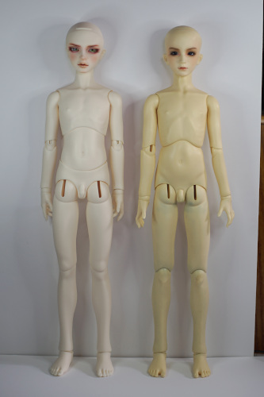
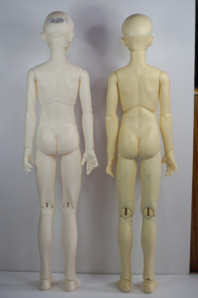
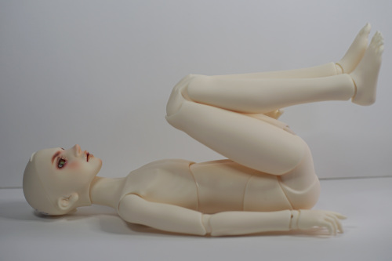
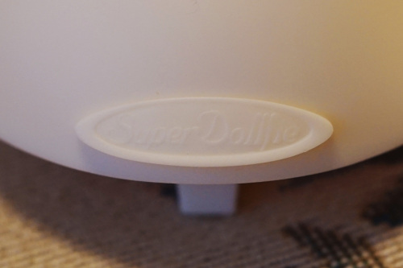

The good, the bad, the what in to heckin heckers???
Height measurements taken flat, no wig, no shoes. Weights are with eyes in, nude, no wig.
Can't remember...
Height: 67cm, weight: 1,775g
The first, absolute first thing you will notice about this doll nude is that his head is laughably small. The second you'll notice is the placement of his penis. Perhaps placing it this low makes it easier to wear pants? The world will never know what the sculptor was thinking and it looks very strange.
He has mobility joints, which I have taped together with masking tape. I have never met a doll so happy to turn his thighs around.
His elbows are double jointed in my least favorite style. However, they are functional. His knees are single jointed. His hands look suspiciously like SD13B-H-01. They aren't recast but the inspiration is obvious.
He came with multiple imperfections from DoD including a bubble in his pinky and a chip in his inner knee. There's a few small bubbles on the tips of his ears as well. His marbling is awful, but it usually was in those days and not unexpected.
The back of his headcap is marked DOD. Inside the headcap is a loop to hook your S hook through, but also two magnets, one on top, one on bottom, so this isn't needed.
Height (w/ SD13B): 59cm, weight: 1,620g, eyewell size: 18mm
His headcap is incredibly unstable and will fall off if you look at it wrong. He has one magnet in the top of his head and one resin hook type mechanism to be caught in a divet in the bottom of the head. His headcap seam is not straight. It has a curve above his ears. My Miho is the early version with no printed serial number. He does not have a Migidoll logo printed inside. He instead has "Miho M.D" written in handwriting.
The inside of his mouth is not perfectly smooth and there is a small piece of resin that sticks out on the left side. It's not noticable if you paint over it.
Height: 62cm, weight: 1,413g, eyewell size: 16mm
He has two magnets on each side of his headcap. He has a green Iplehouse logo plate on the back of his headcap. It seemed to be a little fragile when I attempted to remove it.
This body feels very unskilled. I have many complaints about it.
Height (w/ SD13BLL): 61cm, weight: 1,599g
My Ryu is the early version with no printed serial number. He does not have a Migidoll logo printed inside. He instead has "Ryu M.D" written in handwriting.
He does not have prominent divets to rest the S hook on. I'm a little surprised it doesn't twist and fall out all the time, but it only does rarely.
The wrist balls on this body are connected to the arm. There is very limited movement from side to side.
Height: 53cm, weight: 1,283g, eyewell diameter: 18mm
The torso on the non jointed SD body is so beautiful. It is obviously immobile when compared to split torsos. The body comes with KIPS in the neck, shoulders, and elbows. Her arms are double jointed and her knees are single jointed.
The largest defect I found on this doll was discoloration on the back of her neck. There is a lighter spot, but it is mostly covered by her wig and head. There is a defect in her faceup where the line under her teeth is not perfect.
The one touch system is a blessing from Mother SD. It is in her wrists and feet. I love this feature so much that I bought 3 more Volks bodies.
Her head sculpt number is 90 and her headplate says "2021/DP45".
Long leg weight: 1,455g, regular leg weight: 1,476g
The split torso cannot be moved forward or back, only twisted. No slouching. I sometimes wonder if they should have made a single piece option. There is no double jointing. One touch system appears in wrist and feet.
Most of the parts are labeled "XY3". Each piece is marked R or L, if they are side exclusive. R is his right, not yours. The difference between regular leg and long leg is only the length of the shin piece.The shin piece for LL is marked XY302 while the regular leg only says XY3.
This is a well sculpted body. Movement of joints is smooth. Posability is low. My regular leg has more trouble staying standing than the long leg version.
Height: 62cm, weight: 1,606g, eyewell size: 18mm
The body is SDGrB 13 revival. The body comes with KIPS in the neck, shoulders, elbows, and wrists. There is double jointing in the elbows and knees. The torso is 3 piece. He can move forward and back as well as side to side at each joint. The thighs have mobility joints, but they are designed to fit into the thigh naturally in only one direction, so they don't twist. The position of the string in standing position is hooked so that you must separate the knees a bit to move the legs to the sitting position. It will twist if you attempt to move the legs straight up.
Both PS White with a ~17 year age difference.
I'm outing myself as the owner of a dirty doll.
Unlike the SD13B body, each part is stamped with "VS" instead of "VS S/D". 03 is handwritten in many of the parts as well as L or R. The inner knee and elbow pieces do not seem to be marked left or right. Wrist balls don't seem to be different between sides and are also not marked. One touch system appears in wrist and feet.

He's much more posable than SD13B!
My doll asked me not to upload this one but I had to show the mobility joints in action.
Head number is 227, headplate is "2023/DP50", standard headcap A. Eyewell diameter: 18mm
The top lip of standard headcap A is embossed with "Super Dollfie". The lower lip on the head iteself is blank. My current opinion of this feature is that it sucks and can push the bangs of wigs out in awkward directions if not perfectly placed.